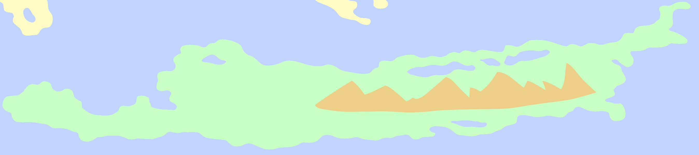
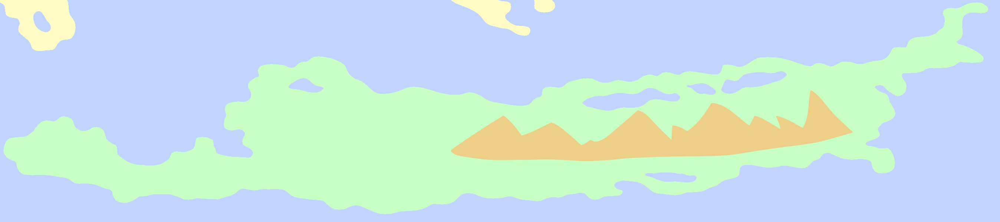

Godspine
People often come to Godspine as a form of training to prepare for trips to the Arisaerel. The region is considered somewhat safer than the Arisaerel because although they share many similarities such as a colder climate, Godspine is continually inhabited while the Arisaerel is not.
Madlen Mountain, the tallest mountain throughout all of Karvaea, is located within the Godspine Mountains in the center of the region. The mountain is believed to be named after a legendary mountain climber.
Close